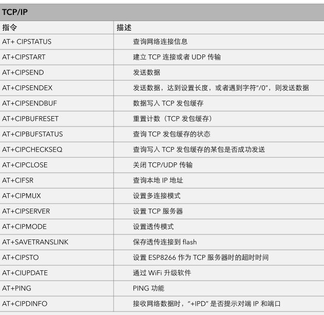

3.2硬件程序设计
3.2 程序设计
硬件设备程序要根据硬件电路进行设计，对于数字信号控制的外围设备，不论选用哪种单片机，它的控制方式包括控制程序都几乎一样，单片机控制数字量输入输出是最基本的操作，所以这里就不在赘述。本节主要是针对特殊设备驱动、控制进行驱动设计，以及常用的I2C、SPI、usart等协议的实际应用。在硬件电路设计时提出两种控制方案，值得注意的是在这两种方案中都用到了ESP8266模块，但在不同方案中esp8266充当的角色是不同的，在MCU+ESP8266方案中ESP8266作为wifi模块使用，只负责数据传输，设备联网。在单独使用ESP8266实现控制的方案中，ESP8266作为控制器使用，可对外围传感器进行直接控制，且也保留了作为wifi模块的所有功能。前者与后者相比，前者开发简单方便，后者开发难度稍大。
3.2.1 ESP8266作WIFI模块
ESP8266一般情况下通常用作wifi模块使用，所以esp8266模组出厂就内置了AT固件包，买回来的时就能直接使用。那么，什么是AT固件包呢？AT固件包就是AT指令的集合，MCU通过串口向esp8266模组发送“AT指令”，就可以配置、操作ESP8266模组，实现网络配置，数据传输等功能.
“AT指令”语句结构简单，指令都以字母“AT”开头，以回车结束，广泛的应用在通信模组与单片机信息交互的场合。“AT指令”是通过单片机串口发给ESP8266 WIFI模组的，默认串口通信格式为，8位数据位，1个停止位，无奇偶校验，无流控，波特率默认115200bps。
单片机与ESP8266进行连接时要注意，单片机的串口TXD与ESP8266模组的RXD连接，单片机的RXD要与模组的TXD连接，模组正常工作时要将reset引脚（GPIO16）置为高电平，将CH_PD使能引脚置为高电平，ESP8266模组才能正常工作。
单片机与ESP8266模组连接后，就可以通过AT指令来控制ESP8266实现一些功能了，为了方便测试调试联网功能，网络部分的程序会使用USB转TTL模块直接连接ESP8266模组和电脑，使用电脑串口来代替单片机串口与ESP8266通信，方便快速开发，迭代网络部分的程序。
基础的AT指令，只是控制ESP8266模组，完成复位、重置、开启关闭低功耗模式，配置串口信息，读取模组信息、测试模组状态等常规操作，对于WIFI联网方面的功能，就要使用WIFI功能块中的指令。
完成模块联网，并与服务器建立连接是一个相对复杂的过程，对于上图所示的WIFI功能块中的AT指令，主要用于配置网络环境，使ESP8266模组与无线网关建立连接，要注意的是ESP8266是2.4G的wifi模块，所以它不能与5G的wifi信号建立连接。
ESP8266模块与局域网或广域网中的TCP、MQTT、HTTP等服务器通信时，需要使用TCP/IP功能块中的AT指令进行配置。TCP/IP功能块中的常用指令如下所示。

ESP8266作为client连接到TCP server：
设置 WiFi 模式: AT+CWMODE=3
连接无线网关（路由器）： AT+CWJAP=”SSID”, “password”
查询设备 IP 地址：AT+CIFSR
ESP8266 连接到 TCP server: AT+CIPSTART=”TCP”, “192.168.3.116”, 8080
发送数据：AT+CIPSEND=4
接收数据无需配置，接收到数据格式为：+IPD, n: xxxxxxxxxx
在连接TCP server时，若服务器处于局域网内，则ESP8266模组要与TCP服务器处于同一个网段内，执行查询设备IP地址后，若IP与TCP服务器不在同一网段，需调用“AT + CIPSTA_CUR”将IP地址配置到同一网段即可正常连接。若TCP服务器处于外网，则不需要关系IP地址问题。上述代码执行正确执行完后，就可以使用ESP8266和TCP服务器互发消息，发送的消息内容只需通过单片机的串口传给ESP8266模块，就会自动发送给服务器。同样，ESP8266模块接收的来自服务器的消息，也会通过串口返回给单片机，单片机只需要设置好串口中断，及时从串口缓存中取数据即可。
3.2.2 ESP8266作控制器
ESP8266内置一块控制器，通过编程、编译，重新烧写固件就可以实现单片机控制读取外围设备数据的功能。乐鑫、安信可都有推出的专门用于用户二次开发的IDE编程环境，当然也提供了linux环境下的开发工具链，对于SOC类芯片的开发，最好在linux环境下进行，linux下不管是开发工具，还是开发过程都很友好，且编译、下载都很快速方便。当然，在linux环境下开发，首先要熟悉linux环境下常规的操作，且linux下几乎很少用到图形化的开发工具，从一开始的编写代码，到编译、调试、烧写都在命令行中完成，使得开发门槛有些高，这可能成了大多数开发者选用windows开发环境的主要原因。但是很不巧的是windows环境下编写ESP8266程序，官方给出的开发环境也是兼容的UNIX环境，常用的操作指令与linux命令几乎一致，且也是在命令行下操作。虽然官方工具包只能在linux，Unix环境下运行，但是也并非没有办法脱离命令行来开发ESP8266，官方考虑到用户群体不同，开发经验也参差不齐，在当前很热门的Arduino开发平台上对ESP8266模组进行了适配。用户只需在arduino ID中编写程序，调用封装好的函数就可以实现对外围设备进行数据读取控制，以及WIFI控制等功能。
1 | //ESP8266作为client连接到MQTT server： |
通过调用setup_wifi()函数将wifi的名称和密码作为参数传入，使ESP8266模块联上WIFI，调用client.setServer(mqtt_server, port)函数，传入MQTT server的IP地址和端口号。接着调用reconnect()函数连接到MQTT服务器，在client.connect（）函数中填入鉴权信息，用作设备验证登陆，使用client.subscribe(“Topic”)函数，订阅主题。使用内置client.setCallback(callback)函数设置回调函数为callback函数，接收到的主题消息都在callback函数中进行处理。